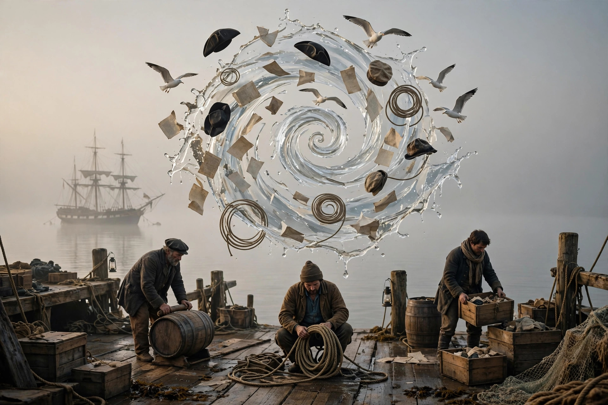

Hooroosh — a wild, hurried, or excited state or situation: confusion, commotion, uproar. Merriam-Webster's example is pure dockside: "such a hooroosh as we had getting to the docks."
Stress the back — huh-ROOSH. This word has no ancestors. Merriam-Webster files its etymology under one word: imitative. No Latin root, no Greek parent — somebody heard a crowd surge, a storm hit a deck, a stampede start, and simply spelled the noise. The word is the sound of the thing it names.
Dictionaries mark it dated — old-fashioned, not gone. Its most famous appearance is in Moby-Dick (1851), chapter 120, in the middle of a storm: "What a hooroosh aloft there!"
Three syllables, one rising roar — tap each part:
A whoop, a rumble, and a hiss of spray: the whole storm in eight letters.
A word born from noise itself, in three parts:
Onomatopoeia with muddy boots. Like whoosh and hurrah, hooroosh wasn't coined by a scholar — it condensed out of the air wherever men worked loud, dangerous jobs and needed a word as fast as the event.
Docks, decks, and stampedes. The classic hooroosh is sudden and physical: cargo shifting, a squall striking the rigging, everyone moving at once in different directions — hurry and confusion at the same time, which is exactly Merriam-Webster's definition.
Dictionaries shelve it as dated, and the modern world files its hoorooshes under other names. But word games keep it in circulation — it sat on tonight's Blossom board, eight letters of pure commotion, waiting to be noticed.
Chapter 120 of Moby-Dick, "The Deck in the Storm": the Pequod is being worked over by a typhoon, men are aloft in the rigging, and the cry goes up — "What a hooroosh aloft there!" The most literary novel in America paused to spell a noise, and the noise became literature.
Ask the dictionary where hooroosh comes from and it shrugs happily: imitative. No borrowing, no root, no slow drift from an older tongue. It is a transcription — the 19th century hearing itself get loud and writing down what that sounded like.
Wiktionary and the big dictionaries label hooroosh dated: a word your great-grandfather's shipmates would have used without thinking. Dated words aren't removed, though — they're kept on the shelf, and every so often a game board deals one back into play.
On tonight's Blossom board it did what it has always done: made a small, cheerful uproar among quieter words — three O's deep, ending in spray, and impossible to say without raising your voice a little.
1. A hooroosh is…
2. The word hooroosh comes from…
3. Melville used the word in…
4. Dictionaries today label hooroosh…
You mine Blossom for prompt seeds — here's this one, ready to plant:

Tonight's render — spot the quiet impossibility.